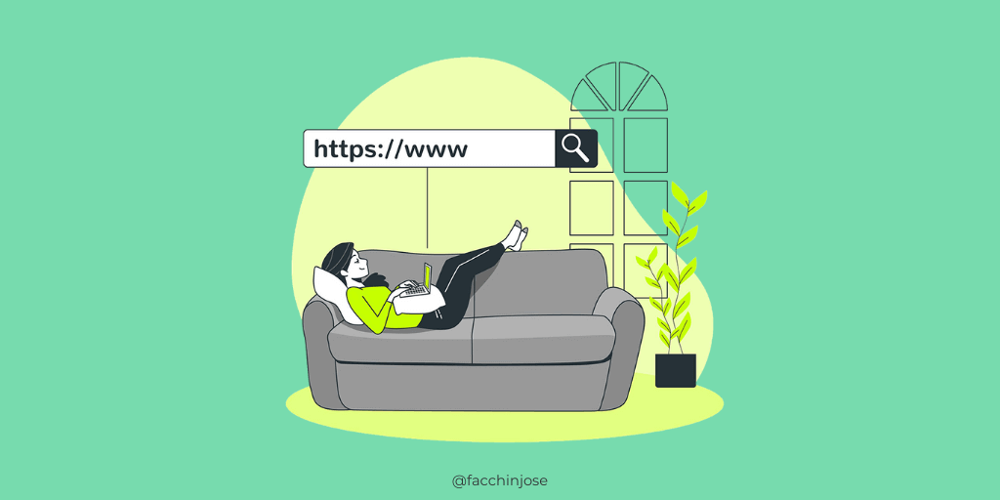

¿Qué es una URL?
significa Uniform Resource Locator (Localizador de Recursos Uniforme). Una URL no es más que una direccion que es dada a un recurso único en la Web. En teoria, cada URL valida apunta a un único recurso. Dichos recursos pueden ser páginas HTML, documentos CSS, imagenes, etc. En la practica, hay algunas excepciones, siendo la más común una URL apuntando a un recurso que ya no existe o que ha sido movido. Como el recurso representado por la URL y la URL en si son manejadas por el servidor Web, depende del dueño del servidor web manejar ese recurso y su URL asociada adecuadamente.
¿Para qué sirve una URL?
Las URL sirven para localizar la información que buscas en internet. Para poder acceder directamente a cualquier página o sitio web debes introducir su dirección en la barra del navegador. Ah, que es tú siempre buscas en Google. Pues fíjate en la barra de direcciones y verás que el buscador también tiene su URL: https://www.google.es/.
¿Por qué la URL es importante para el SEO?
Es el momento de abordar las URL o direcciones web desde otra perspectiva: el posicionamiento web. La creación de una URL adecuada es muy importante de cara a indexar mejor el contenido de una marca y lograr que una página se posicione lo más arriba posible en los resultados de los buscadores.
Licenciatura en Sistemas Computacionales
© Copyright 2022. LUIS ENRIQUE ZABELEGUI ESTUDILLO